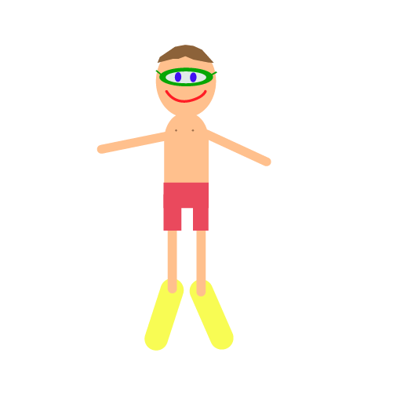
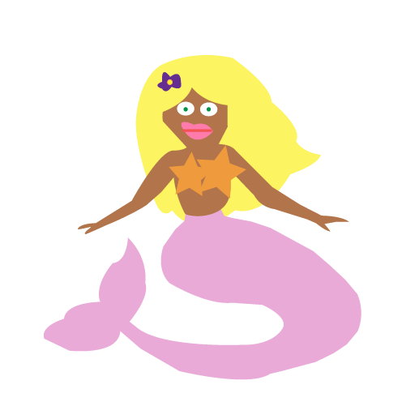

I de første animationsuger skulle vi udarbejde en interaktivt animationsfortælling ud fra en allerede udarbejdet model/flowchart. Man skulle selv vælge genre, stil og indhold. Man skulle tegne al grafikken, scenografien og karakterne samt optage ens egne lyde. Der skulle forekomme to forskellige slutninger, et interaktivt valg, et automatisk valg, en interaktiv handling der skulle gentages et bestemt antal gange og en tidsbegrænsning. Jeg nåede dog aldrig så langt med min animation.
Til inspiration for mit karakterdesign valgte jeg, at google mig lidt frem, og jeg fandt ikke en konkret stil, jeg ville følge og bruge som inspirationskilde, men derimod fandt jeg billeder tegnet i flat design, som jeg brugte til inspiration. Jeg fik relativt hurtigt skitseret mine figurer, men da det kom til at få dem tegnet i Adobe illustrator, stødte jeg på mange problemer. Jeg havde ikke rigtig brugt programmet før, og det tog mig lang tid at lærer at bruge pentool, hvilket jeg først rigtig lærte at bruge, efter jeg var færdig med at tegne figurerne.

Særlige kendetegn ved den stil/karakterdesign jeg valgte at gå efter, er at formerne ikke er så skarpe. Mit spritesheet af manden følger følgende af de 12 animations principper. Anticipation, da mandens krop til sidst i sheet, skal ligne at manden skal vende, så man kan se ham for fra. Jeg brugte Pose to pose i min idefase, hvor jeg startede med at tegne start posen og slut posen først. Jeg forsøger at bruge secondary action, jeg havde dog regnet med, at jeg ville benytte det mere, men jeg fandt det svært at bevæge flere ting ad gangen. Han bevæger dog både hans arme og fødder og krop samtidig.
 
Farverne er med til at vise vigtigheden af hver enkelt ting, jo mere i øjenfaldende farve desto vigtigere er tingen. Designet er præget af friske og varme farver.
Kravene til scenografien var en udendørs scene tegnet i illustrator med en forgrund, mellemgrund og bagrund. Jeg valgte, at baggrunden skulle være holdt i rolige og neutrale farver holdt i det samme farveskema som figurerne. Jeg fik skitseret en, hvad jeg i hvert fald selv syntes, flot havbund med en god dybde ved hjælp af de tre bagrunde. Både i mellemgrunden og bagrunden er der bevægelse i form af fisk.
Jeg nåede ikke at indfører javascript i mit projekt, men jeg var til alle modulerne, og jeg fik lavet alle øvelserne, det var dog meget problematisk for mig at indfører det på min egen animation.